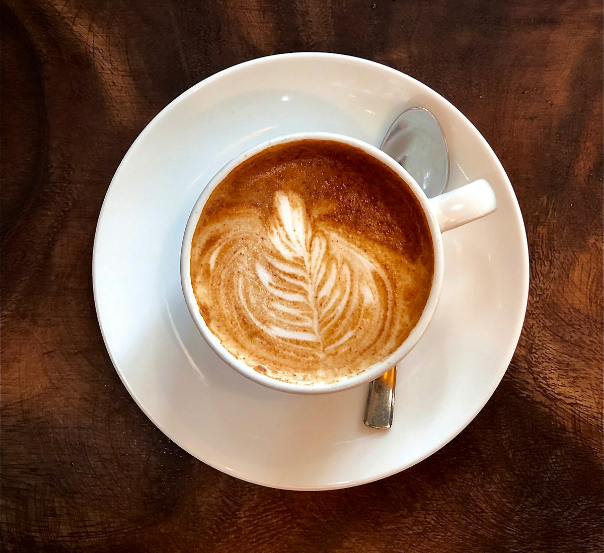
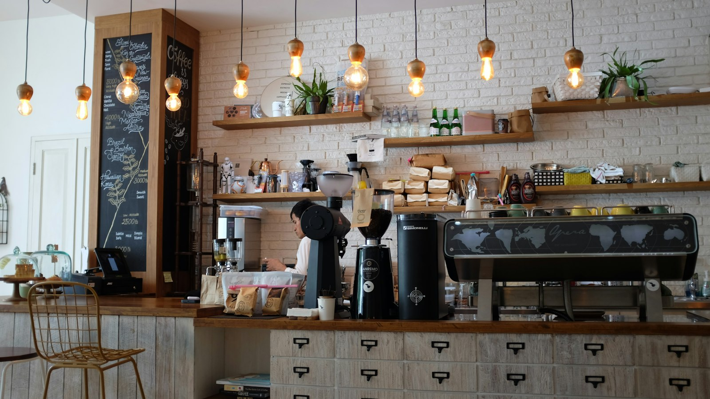
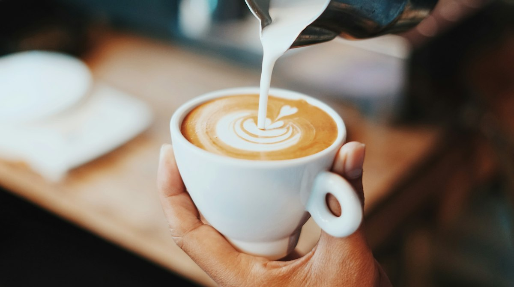
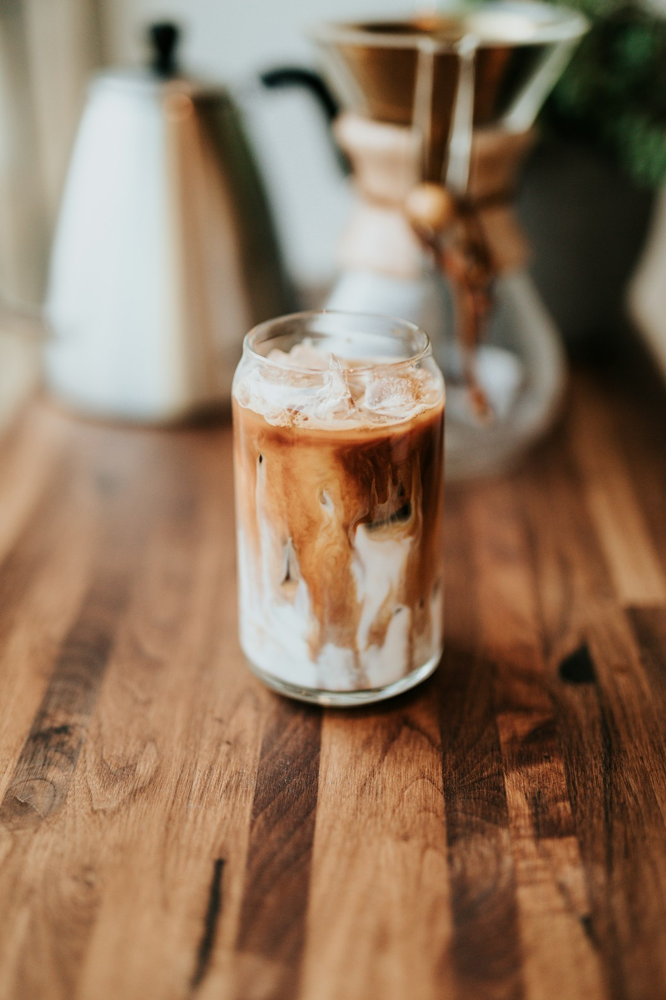
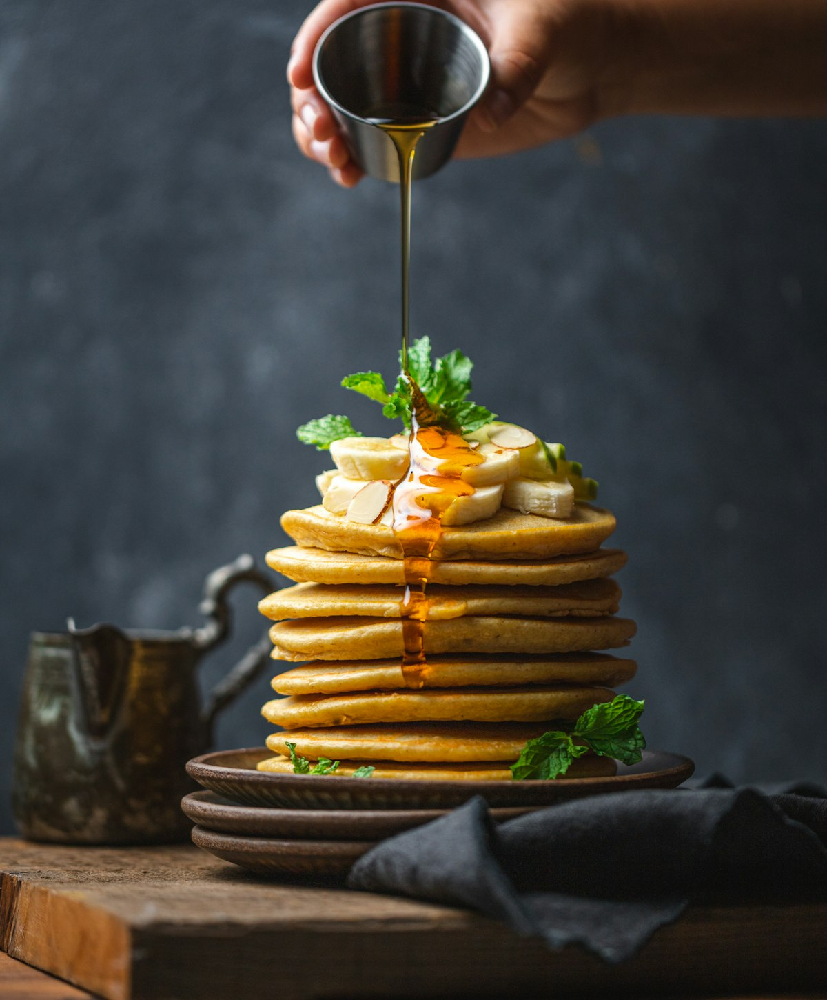

Капучино
290 ₽Классика на молоке с бархатной пенкой. Зерно недели — Бразилия Сантос.
«Крема» — кофейня на Покровском бульваре. Варим эспрессо на зерне свежей обжарки, готовим завтраки весь день и печём десерты на месте — каждое утро, до последней крошки.

Четыре позиции, которые заказывают чаще всего. Полное меню — на отдельной странице, с ценами и составом.

Классика на молоке с бархатной пенкой. Зерно недели — Бразилия Сантос.

Двойной эспрессо и тонкий слой молока. Крепче капучино, мягче латте.

Холодный настой 18 часов. Плотный и сладкий, без кислотности.

С бананом, кленовым сиропом и грецким орехом. Подаём до 18:00.
Мы в пяти минутах от метро. Приходите на завтрак, заберите кофе с собой или останьтесь работать — никто торопить не будет.